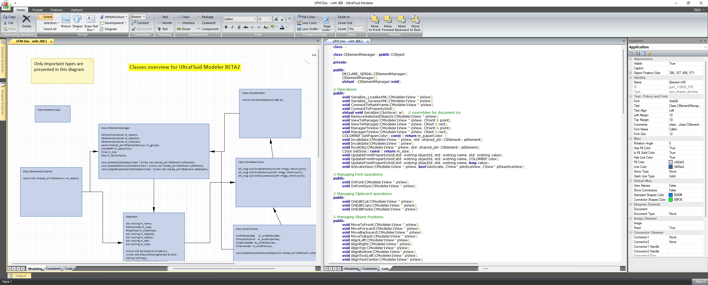
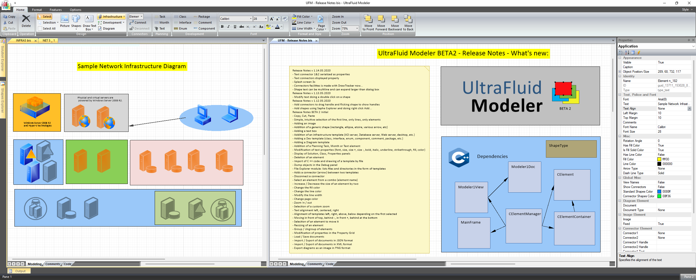

UltraFluid Modeler
par Christophe Pichaud



UltraFluid Modeler est une application C++ native conçue pour modéliser, visualiser et manipuler des représentations de données « fluides » et structurées. Elle propose une architecture modulaire, un moteur de rendu haute performance et une couche de persistance robuste construite sur SQLite. Le projet sert à la fois d’outil de modélisation de niveau professionnel et de vitrine technique d’ingénierie Win32/MFC avancée.
Public cible : développeurs et utilisateurs techniques qui souhaitent comprendre l’architecture interne, les points d’extension et les choix de conception d’UltraFluid Modeler.
Architecture principale
L’application est structurée en modules bien définis, avec une séparation claire entre le modèle, le rendu, la persistance et les composants d’interface utilisateur.
Définit le modèle logique et les structures de données principales, y compris le système de propriétés, le modèle d’objets hiérarchique, la sérialisation et les utilitaires de validation.
Implémente le moteur de rendu, la logique d’interaction et les primitives de dessin 2D utilisées pour visualiser les modèles en temps réel.
Fournit une abstraction légère au-dessus de SQLite, gérant le schéma, les requêtes préparées et l’accès aux données de manière typée.
Contient des composants UI réutilisables comme les éditeurs de propriétés, les vues arborescentes et les boîtes de dialogue, partagés dans l’ensemble de l’application.
UFMCore – modèle logique et structures de données
Le module UFMCore définit les abstractions fondamentales utilisées dans l’application :
- Système de propriétés typées avec métadonnées et formats personnalisables.
- Modèle d’objets hiérarchique (conteneurs, groupes, nœuds) pour des données structurées.
- Logique de sérialisation et désérialisation pour la persistance complète du modèle.
- Définitions de formats permettant d’étendre les types de propriétés.
- Utilitaires de gestion des erreurs et de validation.
Ce module est la source de vérité pour toutes les opérations liées au modèle et reste délibérément découplé des couches de rendu et d’interface.
UFMDrawing – couche de rendu et d’interaction
Le module UFMDrawing implémente le moteur graphique et la logique d’interaction :
- Routines de rendu 2D optimisées pour les formes, connecteurs et superpositions.
- Contexte de dessin personnalisé qui abstrait les opérations Win32 GDI bas niveau.
- Gestion du zoom, du déplacement (pan) et de la grille pour naviguer dans des modèles complexes.
- Logique de hit‑testing et d’interaction pour la sélection et la manipulation des objets.
- Stratégies de double buffering pour réduire le scintillement et améliorer la réactivité.
De nouveaux types d’objets rendus peuvent être introduits sans couplage fort avec le reste de l’UI, ce qui fait de cette couche un point d’extension propre.
SQLiteWrapper – couche de persistance
Le module SQLiteWrapper fournit une abstraction fine mais robuste au-dessus de SQLite :
- Création et évolution du schéma de base de données.
- Utilitaires pour préparer, lier et exécuter les requêtes de façon sûre.
- Wrappers typés pour réduire le code répétitif et les erreurs à l’exécution.
- Gestion automatique des ressources (statements, connexions).
- Intégration avec la sérialisation de UFMCore pour persister l’état du modèle.
SharedViews – composants d’interface réutilisables
Le module SharedViews regroupe les éléments d’interface communs :
- Grilles et éditeurs de propriétés pour inspecter et modifier les données du modèle.
- Vues arborescentes et listes pour la navigation hiérarchique.
- Boîtes de dialogue et logique d’interaction partagée.
- Patrons de mise en page et comportements réutilisés sur plusieurs écrans.
Tests – validation et stabilité
La suite de tests se concentre sur la stabilité des composants cœur :
- Structures de données centrales et logique du modèle de propriétés.
- Cohérence de la sérialisation et de la désérialisation.
- Interactions avec la base de données et intégrité des données.
Interface utilisateur et flux de travail
UltraFluid Modeler propose une interface classique basée sur MFC, optimisée pour les utilisateurs avancés. L’accent est mis sur la réactivité, la lisibilité et le contrôle plutôt que sur l’ornement visuel.
- Canvas principal de modélisation avec rendu et interaction en temps réel.
- Panneaux ancrables pour les propriétés, la hiérarchie du modèle et les journaux.
- Outils contextuels pour éditer, grouper et transformer les objets.
- Raccourcis clavier pour des itérations rapides.
- Persistance intégrée pour des opérations de sauvegarde/chargement fluides.
C’est ici que tu peux intégrer ton carrousel existant de captures d’écran d’UltraFluid Modeler (par exemple depuis Images/MyApps/UltraFluidModeler) pour illustrer visuellement la fenêtre principale, les panneaux de propriétés et le canvas de modélisation.
Fonctionnalités clés pour les développeurs
UltraFluid Modeler est pensé non seulement comme un outil pour l’utilisateur final, mais aussi comme une base de code que les développeurs peuvent explorer, étendre et étudier.
- Architecture modulaire avec séparation claire des responsabilités.
- Couches distinctes pour le modèle, la vue et la persistance.
- Système de propriétés extensible avec formats et métadonnées personnalisés.
- Pipeline de rendu haute performance optimisé pour la réactivité.
- Stockage basé sur SQLite avec schéma simple et surcharge minimale.
- Implémentation native en C++ pour un contrôle maximal des performances et de la mémoire.
- Solution structurée de manière à faciliter l’onboarding de nouveaux contributeurs.
Points d’extensibilité
L’architecture d’UltraFluid Modeler encourage des points d’extension bien définis, afin que les nouvelles fonctionnalités restent isolées et maintenables.
- Ajout de nouveaux types d’objets rendus dans le moteur de dessin.
- Définition de formats de propriétés et de types de métadonnées personnalisés.
- Extension du schéma de sérialisation et de persistance.
- Implémentation de nouveaux outils de dessin, de sélection ou de transformation.
- Intégration de sources de données supplémentaires via l’abstraction SQLite.
Pile technologique
- C++ et C natifs.
- Win32 / MFC pour le framework de l’application desktop.
- SQLite pour la persistance locale basée sur fichiers.
- Scintilla (intégré) pour les scénarios avancés d’édition de texte et de code.
- Moteur de rendu 2D personnalisé construit sur les APIs Win32.
Dépôt et code source
Dépôt GitHub :
https://github.com/ChristophePichaud/UltraFluidModelerNET
Le dépôt contient le code source complet, la structure du projet, ainsi que du contexte supplémentaire sur l’évolution d’UltraFluid Modeler.